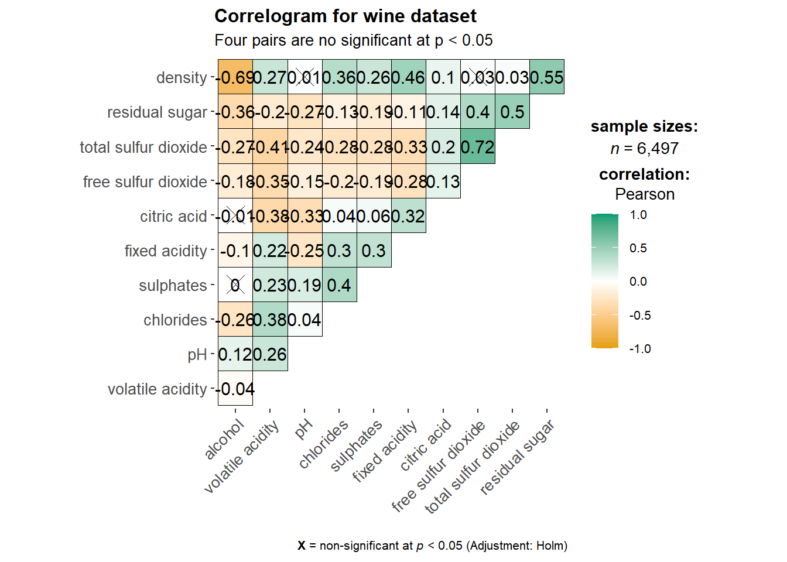

Click to show/hide the code
pacman::p_load(plotly, tidyverse)pacman::p_load(plotly, tidyverse)# require(devtools)
# install_version("ggtern", version = "3.4.1", repos = "http://cran.us.r-project.org")# library(ggtern)pop_data <- read_csv("data/respopagsex2000to2018_tidy.csv")pacman::p_load(corrplot, ggstatsplot, tidyverse)wine <- read_csv("data/wine_quality.csv")head(wine)# A tibble: 6 × 13
`fixed acidity` `volatile acidity` `citric acid` `residual sugar` chlorides
<dbl> <dbl> <dbl> <dbl> <dbl>
1 7.4 0.7 0 1.9 0.076
2 7.8 0.88 0 2.6 0.098
3 7.8 0.76 0.04 2.3 0.092
4 11.2 0.28 0.56 1.9 0.075
5 7.4 0.7 0 1.9 0.076
6 7.4 0.66 0 1.8 0.075
# ℹ 8 more variables: `free sulfur dioxide` <dbl>,
# `total sulfur dioxide` <dbl>, density <dbl>, pH <dbl>, sulphates <dbl>,
# alcohol <dbl>, quality <dbl>, type <chr>pairs() methodThe code chunk below plots scatter plots in an 11x11 matrix.
pairs(wine[,2:12])
[,2,12] indicates that columns 2 to 12 of the dataframe are used in the creation of the scatter plot correlation matrix.
To plot only the lower half of the correlation matrix, the upper.panel argument will be used, as seen in the code chunk below
pairs(wine[,2:12], upper.panel = NULL)
Likewise, you can display only the upper half, this time with the lower.panel argument.
pairs(wine[,2:12], lower.panel = NULL)
panel.cor <- function(x, y, digits=2, prefix="", cex.cor, ...) {
usr <- par("usr")
on.exit(par(usr))
par(usr = c(0, 1, 0, 1))
r <- abs(cor(x, y, use="complete.obs"))
txt <- format(c(r, 0.123456789), digits=digits)[1]
txt <- paste(prefix, txt, sep="")
if(missing(cex.cor)) cex.cor <- 0.8/strwidth(txt)
text(0.5, 0.5, txt, cex = cex.cor * (1 + r) / 2)
}
pairs(wine[,2:12], upper.panel = panel.cor)
ggcormat()ggstatsplot::ggcorrmat(
data = wine,
cor.vars = 1:11
)
ggstatsplot::ggcorrmat(
data = wine,
cor.vars = 1:11,
ggcorrplot.args = list(outline.color = "black",
hc.order = TRUE,
tl.cex = 10),
title = "Correlogram for wine dataset",
subtitle = "Four pairs are no significant at p < 0.05"
)
ggcorrplot.arg argument provides addition arguments (usually aesthetic) arguments
The following code chunk is a sample that demonstrates controlling of certain components of the correlation matrix, such as changing the font size of the x and y axes labels.
ggplot.component = list(
theme(text=element_text(size=5),
axis.text.x = element_text(size = 8),
axis.text.y = element_text(size = 8)))Facets can be created using grouped_ggcorrmat() and specifying the grouping.var.
grouped_ggcorrmat(
data = wine,
cor.vars = 1:11,
grouping.var = type,
type = "robust",
p.adjust.method = "holm",
plotgrid.args = list(ncol = 2),
ggcorrplot.args = list(outline.color = "black",
hc.order = TRUE,
tl.cex = 10),
annotation.args = list(
tag_levels = "a",
title = "Correlogram for wine dataset",
subtitle = "The measures are: alcohol, sulphates, fixed acidity, citric acid, chlorides, residual sugar, density, free sulfur dioxide and volatile acidity",
caption = "Dataset: UCI Machine Learning Repository"
)
)
wine.cor <- cor(wine[,1:11])
corrplot(wine.cor)
Default visual object is a circle
Default color scheme is diverging blue-red
Blue: pairs with positive correlation coefficient
Red: pairs with negative correlation coefficient
Intensity (i.e. saturation) of the color denotes the strength of the correlation
Darker: stronger linear relationship
Lighter: weaker linear relationship
In corrplot, there are seven visual geometrics that can be used to denote the attribute values, namely: circle, square, ellipse, number, shade, color and pie.
corrplot(wine.cor,
method = "ellipse") 
corrplot() supports three layout types, namely: full, upper and lower, with the default being full.
corrplot(wine.cor,
method = "ellipse",
type="lower")
The layout can be further customized. In the code chunk below, the axis text label color is changed for red to black using tl.col while the cells with the diagonal line are removed using diag.
corrplot(wine.cor,
method = "ellipse",
type="lower",
diag = FALSE,
tl.col = "black")
Using corrplot.mixed(), we can create a mixed corrgram whereby the correlation coefficients are at the upper half of the matrix, and the visual matrix at the lower half.
corrplot.mixed(wine.cor,
lower = "ellipse",
upper = "number",
tl.pos = "lt",
diag = "l",
tl.col = "black")
We can use cor.mtest() to determine the p-values and confidence intervals for each pair of variables.
wine.sig = cor.mtest(wine.cor, conf.level= .95)We can then use the p.mat argument as seen in the code chunk below.
corrplot(wine.cor,
method = "number",
type = "lower",
diag = FALSE,
tl.col = "black",
tl.srt = 45,
p.mat = wine.sig$p,
sig.level = .05)
As seen from the corrgram, not all correlation pairs are statistically significant (the pairs that are not statistically significant are indicated by a cross).
corrplot.mixed(wine.cor,
lower = "ellipse",
upper = "number",
tl.pos = "lt",
diag = "l",
order="AOE",
tl.col = "black")
If using hclust, corrplot() can draw rectangles around the corrgram based on the results of hierarchical clustering.
corrplot(wine.cor,
method = "ellipse",
tl.pos = "lt",
tl.col = "black",
order="hclust",
hclust.method = "ward.D",
addrect = 3)